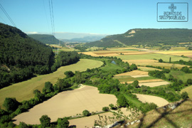

Posterior a la instalación de la Sede del Obispado en Valpuesta, en las crónicas de la época, se alude a un castillo ubicado en Losa, en lo alto de una peña, junto al río Jerea. En la cumbre de la roca y ocupando la parte dominante de la misma, se encuentran los restos de los muros y taludes de este castillo.
-
El Valle de Losa, junto con otras zonas del norte burgalés, crearon un frente de resistencia y posterior ataque sobre los ejércitos musulmanes, para lo cual fue necesario crear una serie de fortificaciones, una de ellas fue el castillo de Tedeja, en Trespaderne, el más importante de la época, según las crónicas, y cuyo Centro de Interpretación puede visitarse.
- 
{kind=link}
Para concluir con esta historia del poblamiento en la zona y, más concretamente, en el entorno de la ermita, hay que puntualizar que, a la sombra de este primer castillo, surge un poblado alto medieval que prolongará su existencia hasta la creación del actual núcleo urbano de San Pantaleón de Losa, donde se ubican los barrios de La Venta, La Tejera y el Barrio de la Iglesia. Dentro de este periodo, se construye la ermita.